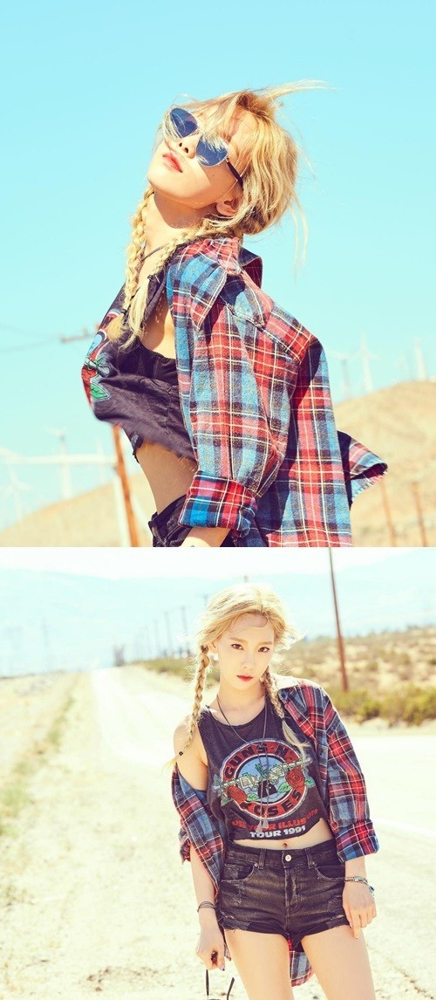
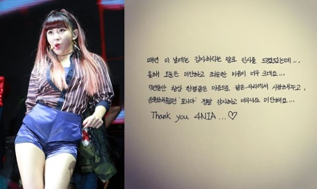

News 업데이트 중!!!
News 업데이트 중!!!
|

|
태연, 금발 헤어스타일+오묘한 표정으로 새앨범 기대 UP
[헤럴드POP=박수인 기자] 태연이 솔로 앨범 발매를 앞두고 관련 이미지를 공개했다.
소녀시대 태연은 18일 개인 SNS에 본인의 사진 두 장을 게재했다. 사진 속 태연은 금발 머리에 오묘한 표정을 짓고 있어 이번 솔로 앨범에 대한 기대를 더욱 높이고 있다.
사진과 함께 태연은 "#why #new #m02 #taeyeon"라는 해쉬태그를 붙여 이번 앨범 타이틀명이 'Why'임을 알렸다.
한편 태연은 오는 28일 두 번째 솔로 EP 'Why' 발매를 앞두고 있다.
popnews@heraldcorp.com
- Copyrights ⓒ 헤럴드POP & heraldpop.com, 무단 전재 및 재배포 금지 -
|
|
|
'인기가요', 엑소 1위..컴백 11일째 벌써 가요프로 3관왕(종합)
그룹 엑소가 '인기가요'에서도 1위를 차지했다.
엑소는 19일 오후 생방송된 SBS 가요 순위 프로그램 '인기가요'에서 지난 9일 선보인 정규 3집 더블 타이틀곡 중 하나인 '몬스터'로 1위를 기록했다.
엑소는 1위 달성 후 "오늘 1위 후보 3개 중 2개가 엑소의 노래였다"라며 "모두 팬들의 사랑 덕분"이라며 감사한 마음을 표현했다.
이로써 엑소는 '몬스터'로 지난 16일 Mnet '엠 카운트다운'과 17일 KBS 2TV '뮤직뱅크'에 이어 이번 '인기가요'까지, 방송사 가요 순위 프로그램에서 총 3번째 1위를 품에 안았다.
컴백 11일째 만에 일궈낸 성과로, 대표 K팝 아이돌그룹인 엑소의 저력을 다시 한 번 알게 하는 대목이다.
한편 이날 스페셜 MC에는 팬들 사이에서 '비글돌'로 불리며 인기를 끌고 있는 그룹 방탄소년단 뷔와 제이홉, 마마무 문별과 휘인이 호흡을 맞춰 유쾌한 분위기 속에 진행했다.
배치기와 다이아는 컴백 무대를 꾸몄다. '술김에'로 돌아온 배치기는 제시와 함께 신나고 유쾌한 무대를 꾸며 눈길을 끌었다. '프로듀스101'에 멤버들이 출연하며 인지도를 높인 다이아는 청순한 매력이 돋보이는 '그 길에서'로 무대를 선사, 팬들의 환호를 받았다.
최근 '춤왕춤신'으로 불리는 정진운은 이날도 '윌' 무대 도중 스페셜 MC들과 막춤을 선보여 웃음을 자아냈다.
이날 '인기가요'에는 엑소, 종현, EXID, 러블리즈, 몬스타엑스, 정진운, 유키스의, CLC, 다이아, 크나큰, 오마이걸, 배치기, 피에스타 , MAP6, 이진아, 에이프릴, 빈블로우, 혜이니, 아포스가 출연해 무대를 꾸몄다.
이정호 기자 mrlee0522@mtstarnews.com
<저작권자 ⓒ ‘리얼타임 연예스포츠 속보,스타의 모든 것’ 스타뉴스, 무단전재 및 재배포 금지>
|

|
“갈수록 예뻐지네” 수지, 청순+발랄 매력 과시
[헤럴드POP=노윤정 기자] 미쓰에이 수지가 미모를 뽐냈다.
수지는 18일 자신의 인스타그램을 통해 여러 장의 셀카를 게재했다. 다양한 포즈와 표정으로 상큼한 매력을 발산하며 팬들의 눈길을 사로잡은 터.
공개된 사진 속 수지는 밝은 색으로 염색한 머리와 흰 피부가 청순한 매력을 더하고 있으며, 붉은 입술과 손톱이 발랄한 매력까지 발산한다.
또한 장난스럽게 얼굴을 찡그리며 손을 볼에 갖다 대고 있는 애교 섞인 포즈가 보는 이들을 절로 미소 짓게 한다.
한편 수지는 오는 7월 6일 첫 방송되는 KBS 2TV ‘함부로 애틋하게’에 출연한다.
popnews@heraldcorp.com
- Copyrights ⓒ 헤럴드POP & heraldpop.com, 무단 전재 및 재배포 금지 -
|
|
|
CLC 권은빈, 구토·편두통 증세 "음악중심 불참"
CLC 멤버 권은빈이 활동을 중단하고 당분간 휴식을 취한다.
18일 권은빈 소속사 큐브 엔터테인먼트는 CLC 팬카페를 통해 "권은빈이 건강상 문제로 당분간 활동을 중단한다"고 밝혔다.
앞서 17일 권은빈은 구토를 동반한 편두통 증세로 병원을 찾아 진단을 받았으며, 입원 치료를 받기로 결정했다.
소속사에 따르면, 권은빈은 건강이 악화된 상태로 KBS 2TV '뮤직뱅크' 생방송을 소화하고 MBC '쇼 음악중심' 리허설에 임했다. 하지만 소속사 측은 권은빈이 더 이상 활동에 나서는 건 무리라고 판단했다.
이에 따라 18일 방송되는 MBC '쇼 음악중심'에는 권은빈을 제외한 6명의 멤버가 무대에 오른다.
다음은 공식입장 전문.
안녕하세요. 큐브 엔터테인먼트입니다.
권은빈 양이 건강상의 이유로 체력이 건강하게 회복될 때 까지 한시적으로 씨엘씨(CLC) 활동을 중단하게 됐다는 점 알려 드립니다.
이렇게 갑작스럽고 안타까운 소식을 전해드리게 된 점, 7인조 완전체로 컴백 활동을 시작한 씨엘씨와 은빈이의 컴백을 기다려왔고 성원해주신 많은 팬 분들께 죄송한 말씀 전해 드립니다.
권은빈 양은 17일 오후 구토를 동반한 편두통 증세를 보여와 긴급히 병원을 찾아 진료 및 치료를 받았습니다.
좋지 않은 몸 상태에도 불구하고 은빈 양은 무대에 서겠다는 본인의 의지로 당초 예정된 KBS 2TV '뮤직뱅크' 생방송 무대에 섰고 오늘 MBC '쇼 음악중심' 드라이 리허설까지 마쳤으나 체력이 많이 떨어진 상태에서 더이상 방송 활동을 진행하기 어렵렵다고 판단, 당사와의 깊은 상의 끝에 입원해 치료를 받기로 했습니다.
이로 인해 오늘 오전 MBC '쇼 음악중심'은 은빈 양을 제외한 6명이 무대에 오르기로 했습니다.
은빈 양은 당분간 입원해 진료 및 치료를 더 받는것이 좋겠다는 병원 측의 권고와 건강을 최우선적으로 회복하는게 좋겠다는 당사의 판단으로 활동을 잠시 멈추는 점 너르러운 양해 부탁드립니다.
내일(19일) 예정된 SBS '인기가요'는 은빈 양을 제외한 6인으로 무대에 설 계획이며 팬사인회 또한 은빈 양이 참석하지 못함을 알려 드립니다.
향후 은빈 양의 활동은 병원에서의 치료 결과와 은빈 양의 건강 상태에 따라 추후 말씀드리도록 하겠습니다.
그동안 은빈 양을 아껴주신 팬 분들께 죄송한 점 말씀드리며 은빈 양의 건강이 회복된 후 팬 여러분들을 만날 계획입니다. 감사합니다.
데일리안 스팟뉴스팀
ⓒ (주)데일리안 - 무단전재, 변형, 무단배포 금지
|
|

|
권소현, '해체' 포미닛 7주년 인사 "너무너무 미안해요"
해체한 걸그룹 포미닛의 멤버로 활동했던 권소현이 자신의 SNS를 통해 포미닛 데뷔 7주년 기념 인사를 전했다.
권소현은 18일 자신의 인스타그램을 통해 직접 손 편지를 작성한 글을 공개했다. 글에서 권소현은 "매년 이날에는 감사하다는 말로 인사를 드렸었는데 오늘은 미안하고 죄송한 마음이 너무 크네요"라고 전했다.
권소현은 이어 "7년 동안 항상 한결같은 마음으로 같은 자리에서 사랑해주고 응원해줬던 '포니아' 정말 감사하고 너무나도 미안해요. Thank You 4NIA"라는 글을 전했다.
현재 이 글은 비공개 계정으로 전환된 상태다.
한편 포미닛 소속사 큐브엔터테인먼트는 지난 16일 "남지현, 허가윤, 전지윤, 권소현 4인은 6월 14일 당사와의 전속계약이 종료됨에 따라 큐브 엔터테인먼트를 떠나게 됐다"고 공식 발표했다.
윤상근 기자 sgyoon@mt.co.kr
<저작권자 ⓒ ‘리얼타임 연예스포츠 속보,스타의 모든 것’ 스타뉴스, 무단전재 및 재배포 금지>
|
|
|
씨엘씨 권은빈, 구토 증상으로 팬사인회 불참 "입원 치료"
걸그룹 씨엘씨 멤버 권은빈이 구토 증상을 보여 예정된 팬 사인회에 불참했다.
권은빈 소속사 큐브엔터테인먼트 관계자는 18일 스타뉴스에 "권은빈이 지난 17일 서울 여의도 영풍문고에서 진행된 씨엘씨 팬 사인회에 불참했다"며 "권은빈을 제외하고 장예은, SORN, 오승희, 장승연, 최유진, 엘키는 정상적으로 팬사인회에 참석했다"고 밝혔다.
관계자는 "17일 오전 구토 증상 등을 보여 병원으로 향했다"며 "권은빈은 현재 병원에 입원해 치료를 받고 있으며 휴식을 취하고 있다"고 덧붙였다.
한편 씨엘씨는 지난 5월 30일 7인조로 개편한 이후 첫 미니앨범인 '뉴 클리어'를 발표하고 활동을 재개했다.
윤상근 기자 sgyoon@mt.co.kr
<저작권자 ⓒ ‘리얼타임 연예스포츠 속보,스타의 모든 것’ 스타뉴스, 무단전재 및 재배포 금지>
|
./news/7.jpg
./news/8.jpg
./news/9.jpg
./news/10.jpg
종현 '슈퍼콘서트 피날레 열창'
[MD포토] 여자친구 소원 '아름다운 스쿨룩 패션'
[MD포토] 쯔위 '너무 좋아 점프'
[마이데일리 = 수원(경기도) 한혁승 기자] 가수 종현이 17일 오후 경기도 수원월드컵경기장에서 진행된 '수원 K-POP 슈퍼콘서트'에서 멋진 무대를 선보였다.
이번 '슈퍼콘서트'는 SBSMTV 글로벌 뮤직 버라이어티 '더 쇼' 특집으로 17일, 18일 양일간 진행되며 오는 21일과 28일 밤 8시 SBS MTV와 중국 최대 동영상 사이트 투도우를 통해 방송된다.
엑소를 비롯해, 샤이니 종현, 여자친구, 트와이스, 아이오아이, EXID, 세븐틴, 라붐, 에일리, 마마무, 업텐션, 피에스타, 더블에스301, 유키스 등 K-POP 가수 20여팀이 출연한다.
(한혁승 기자 hanfoto@mydaily.co.kr)
기사 제보 및 보도자료 press@mydaily.co.kr
사진 및 기사 구매 contents@mydaily.co.kr
- NO.1 뉴미디어 실시간 뉴스 마이데일리(www.mydaily.co.kr) 저작권자 ⓒ 마이데일리. 무단전재&재배포 금지 -
[마이데일리 = 수원(경기도) 한혁승 기자] 걸그룹 여자친구 소원이 17일 오후 경기도 수원월드컵경기장에서 진행된 '수원 K-POP 슈퍼콘서트'에서 멋진 무대를 선보였다.
이번 '슈퍼콘서트'는 SBSMTV 글로벌 뮤직 버라이어티 '더 쇼' 특집으로 17일, 18일 양일간 진행되며 오는 21일과 28일 밤 8시 SBS MTV와 중국 최대 동영상 사이트 투도우를 통해 방송된다.
엑소를 비롯해, 샤이니 종현, 여자친구, 트와이스, 아이오아이, EXID, 세븐틴, 라붐, 에일리, 마마무, 업텐션, 피에스타, 더블에스301, 유키스 등 K-POP 가수 20여팀이 출연한다.
(한혁승 기자 hanfoto@mydaily.co.kr)
기사 제보 및 보도자료 press@mydaily.co.kr
사진 및 기사 구매 contents@mydaily.co.kr
- NO.1 뉴미디어 실시간 뉴스 마이데일리(www.mydaily.co.kr) 저작권자 ⓒ 마이데일리. 무단전재&재배포 금지 -
[마이데일리 = 수원(경기도) 한혁승 기자] 걸그룹 트와이스 쯔위가 17일 오후 경기도 수원월드컵경기장에서 진행된 '수원 K-POP 슈퍼콘서트'에서 멋진 무대를 선보였다.
이번 '슈퍼콘서트'는 SBSMTV 글로벌 뮤직 버라이어티 '더 쇼' 특집으로 17일, 18일 양일간 진행되며 오는 21일과 28일 밤 8시 SBS MTV와 중국 최대 동영상 사이트 투도우를 통해 방송된다.
엑소를 비롯해, 샤이니 종현, 여자친구, 트와이스, 아이오아이, EXID, 세븐틴, 라붐, 에일리, 마마무, 업텐션, 피에스타, 더블에스301, 유키스 등 K-POP 가수 20여팀이 출연한다.
한혁승 기자 hanfoto@mydaily.co.kr
기사제보 및 보도자료 press@mydaily.co.kr
사진 및 기사 구매 contents@mydaily.co.kr
- NO.1 뉴미디어 실시간 뉴스 마이데일리 (www.mydaily.co.kr)
저작권자 ⓒ 마이데일리. 무단전재&재배포 금지 -